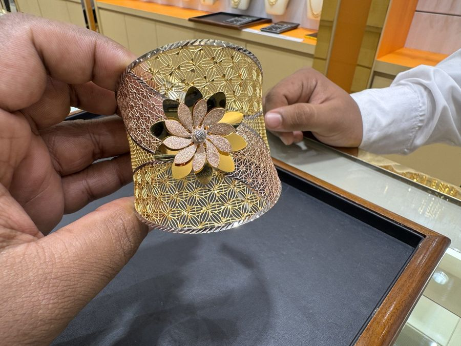
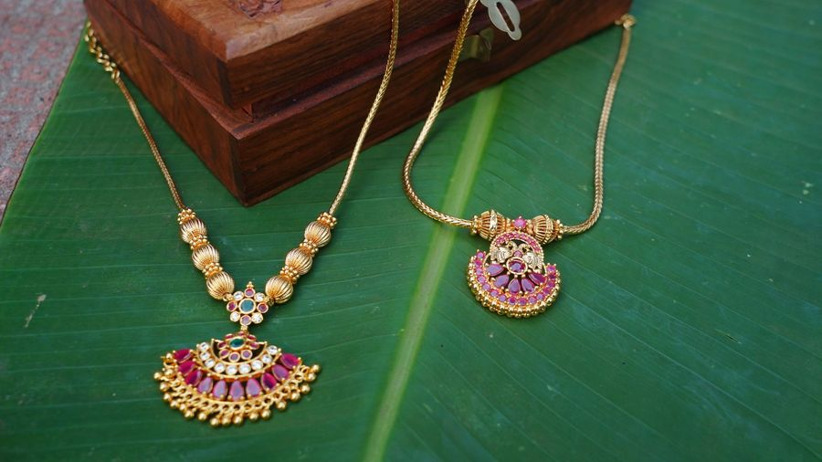

Tepsi tepsi koleksiyon
Bir kuyumcu vitrininde en çok sorulan takı türlerini tepsi tepsi anlattık. Vitrindeki modeller ve gramlar değişir; aklınızdakini sorun, bilgi verelim.
Alyans ve tektaş
Her gün parmağınızda duracak yüzük. Seçerken modelden önce rahatlığına bakın.
- Bombeli alyansDış yüzeyi yuvarlak, en bilinen biçim. Parmakta yumuşak durur.
- Düz alyansYüzeyi düz, kenarları belirgin. Sade ve çağdaş bir görünüm verir.
- Kalem işli alyansYüzeyine desen işlenir; ışıkta kıpır kıpır parlar.
- Taşlı alyansTek sıra ya da çepeçevre taşlı. Çepeçevre taşlı olana tamtur denir.
- TektaşTek taşlı nişan yüzüğü. Taşı tutan tırnakların sayısı ve biçimi görünümü belirler.
- BeştaşYan yana beş taş. Yıl dönümü ve doğum hediyesi olarak sık seçilir.
Alyans seçerken bakılacak dört şey
- Genişlik
- Alyansın eni milimetreyle söylenir. Geniş alyans parmakta daha sıkı durur; ölçü seçerken bunu hesaba katın.
- Ayar
- 14 ayar daha serttir, çizilmeye karşı dayanıklıdır. 22 ayarın sarısı koyudur ama daha yumuşaktır.
- Yüzey
- Parlak yüzey çizikleri daha çabuk gösterir; mat ve işlemeli yüzeyler günlük kullanımda izleri saklar.
- Ölçü
- Parmak gün içinde şişer, soğukta incelir. Ölçü bulucu ile numaranızı öğrenin, mağazada doğrulayalım.
Pırlantada 4C
Bir taşın değerini belirleyen dört özellik. Bakarken bunları sorun.
- Karat (ağırlık)
- Taşın ağırlığıdır; bir karat 0,2 gram eder. Altındaki "ayar" ile karıştırılmamalı.
- Renk
- D'den Z'ye harflerle gösterilir. D en renksiz olanıdır; harf ilerledikçe sarımsı ton artar.
- Berraklık
- Taşın içindeki doğal izlerin azlığıdır. İz azaldıkça berraklık derecesi yükselir.
- Kesim
- Işıltıyı asıl belirleyen özelliktir. İyi kesilmiş taş, ışığı üstünden geri yansıtır.
Bilezik
Hem takı hem birikim. Düğünlerde en çok takılan, zor günde en kolay bozdurulan altın.
Bilezik fiyatı iki parçadan oluşur: altının gramı ve işçilik. Burma gibi sade modellerde işçilik payı düşük, işlemeli modellerde yüksektir. Birikim için alıyorsanız sade, takmak için alıyorsanız sevdiğiniz modeli seçin.

- Burma bilezikAltın tellerin burulmasıyla yapılır. Sade ve yaygın modeldir.
- Ajda bilezikİçi boş, hacimli ve üzeri desenli. Gramına göre gösterişli durur.
- Hasır bilezikİnce tellerin örülmesiyle yapılır. Trabzon hasırı el işçiliğiyle bilinir.
- Kelepçe bilezikGeniş ve ağzı açık; bileğe yandan takılır. Gösterişli modeller bu türdedir.
- Düz bilezikİnce ve sade. Birkaçı bir arada takılır, birikim için sık seçilir.
- İşçilikli modellerTaşlı, mineli ya da lazer kesimli bilezikler. Güncel modelleri sorun.
Bilezik ölçüsü nasıl alınır
Bilezik bilekten değil, elin en geniş yerinden geçer. Bu yüzden ölçü elden alınır.
- Elinizi daraltınBaşparmağınızı avuç içine doğru kapatın, bilezik takar gibi.
- En geniş yeri ölçünMezurayı parmak köklerinin üzerinden dolayın, santimetreyi okuyun.
- Çapa çevirinÇevreyi 3,14'e bölün. Yandaki araç bunu sizin yerinize yapar.
Bilezik ölçüsü bulucu
El çevresi (cm)Hesaplanan çap 6,05 cm; bir üst bilezik ölçüsü 6,2.
Bilezikler çoğunlukla 0,2 cm aralıklarla yapılır. Kesin ölçü için mağazada deneyin.
Merhaba, bilezik bakıyorum. El çevrem 19 cm, yaklaşık 6,2 iç çap. Bu ölçüde hangi modeller var?

Set ve kolye
Düğün takısının en gösterişli parçası settir: kolye, küpe, bileklik ve çoğu zaman yüzük, aynı desenle.
Setler parça sayısıyla anılır: üçlü, dörtlü, beşli. Seçerken gelinliğin yakasına, küpenin ağırlığına ve setin sonradan parça parça takılıp takılamayacağına bakın.
Kolye boyu rehberi
Boylar yaklaşıktır; boyun kalınlığına göre kolye bir parmak yukarıda ya da aşağıda durur.
- 40 cm
- Boyun dibinde durur. Tek taşlı ince kolyeler ve gerdanlıklar için.
- 45 cm
- Köprücük kemiğinin üstüne gelir. En çok tercih edilen günlük boydur.
- 50 cm
- Köprücük kemiğinin biraz altı. İsimli ve harfli kolyelerde rahat durur.
- 60 cm
- Göğüs üstüne iner. İri uçlu kolyeler ve kazak üstü kullanım için.
- 70 cm ve üstü
- Uzun zincirler. Tek başına ya da kısa bir kolyeyle üst üste takılır.
Zincir örgüleri
- Forse zincirOval halkaların bir yatık bir dik dizildiği klasik örgü. Uçlu kolyelerin çoğu bununla takılır.
- Halat zincirBurulmuş ip görünümünde. Işığı her açıdan yakalar, tek başına da takılır.
- Gurmet zincirHalkaları yassıltılıp yatırılmıştır; tene düz oturur. Erkek zincirlerinde yaygındır.
- Top zincirKüçük altın toplardan oluşur. İnce bilekliklerde ve çocuk takılarında görülür.
Kime, ne hediye alınır
Altın hediyenin iyi yanı, yıllar sonra da saklanıp hatırlanması. Zor yanı, doğru olanı seçmek.
Yandaki liste, kuyumcuda en sık sorulan hediyeleri vesilesine göre toplar. Ayırabileceğiniz tutarı söylerseniz o aralıkta seçenekleri birlikte çıkaralım.
- Yeni doğan bebek
- Çeyrek ya da gram altın, maşallah, bebek künyesi.
- Nişan ve düğün takısı
- Çeyrek, yarım ve tam altın; yakın akrabadan bilezik.
- Eş ya da nişanlı
- Tektaş, beştaş, ince bir kolye ya da bileklik.
- Anne
- Bilezik, küpe, harfli ya da isimli kolye.
- Doğum günü
- Küpe, bileklik, harf kolye; hafif ve günlük takılabilen parçalar.
- Sünnet ve mezuniyet
- Çeyrek ya da gram altın; kutulu ve kurdeleli isteyip istemediğinizi söyleyin.
Ziynet altını
Çeyrek, yarım, tam: düğünde takılan, kenarda biriktirilen altınlar. Hepsi 22 ayardır.
| Altın | Ağırlık | Ayar |
|---|---|---|
| Çeyrek altın | 1,75 gram | 22 ayar |
| Yarım altın | 3,50 gram | 22 ayar |
| Tam altın | 7,00 gram | 22 ayar |
| Gremse (ikibuçukluk) | 17,50 gram | 22 ayar |
| Beşli altın | 35,00 gram | 22 ayar |
| Ata (Cumhuriyet) altını | 7,216 gram | 22 ayar |
| Gram altın | Paketli | 24 ayar |
Sorarken bilmeniz gerekenler
- Alış fiyatı ile satış fiyatı farklıdır. Alırken satış, bozdururken alış fiyatı geçerlidir.
- Çeyrekte "yeni tarihli" ve "eski tarihli" ayrımı vardır; fiyatları aynı olmayabilir.
- Ata altını ziynet tam altından biraz ağırdır; ikisi aynı şey değildir.
- Gram altın paketlidir; paketi açılmadan saklanması önerilir.
- Takı için kurdeleli ya da iğneli isterseniz sorarken belirtin.
Ayar rehberi ve has altın
Ayar ve milyem aynı şeyi iki ayrı dille söyler: takının ne kadarının saf altın olduğunu.
| Ayar | Milyem | Nerede görülür |
|---|---|---|
| 24 ayar | 995 ve üstü | Gram ve külçe altın |
| 22 ayar | 916 | Bilezik, ziynet altını |
| 21 ayar | 875 | Bazı bilezik ve setler |
| 18 ayar | 750 | Pırlantalı ve taşlı takılar |
| 14 ayar | 585 | Alyans, günlük takı |
| 8 ayar | 333 | Hafif, hesaplı takılar |
Takının iç yüzünde ya da kilidinde küçük bir damga bulunur: 585, 750, 916 gibi. Bu sayı milyemdir; bin parçanın kaçının altın olduğunu gösterir.
Beyaz ve rose altın da altındır. Rengi, altına katılan diğer metaller verir; ayar aynı kalır.
Has altın hesaplayıcı
Takının gramını ve ayarını girin; içinde ne kadar saf altın olduğunu görün.
Ağırlık (gram)- 22 ayar10 gram 22 ayar altında yaklaşık 9,16 gram has altın bulunur.
Merhaba, elimde yaklaşık 10 gram 22 ayar altın var (yaklaşık 9,16 gram has). Bozdurmak istiyorum; güncel alış fiyatını öğrenebilir miyim?
Hesap yaklaşıktır; taş ve kilit ağırlığı gramdan düşülür. Kesin değer tezgâhta tartıyla belli olur.
Aradığınız burada yoksa
Bu sayfa bir rehber; vitrinin tamamı değil. Aklınızdaki modeli bir cümleyle yazın ya da fotoğrafını gönderin.